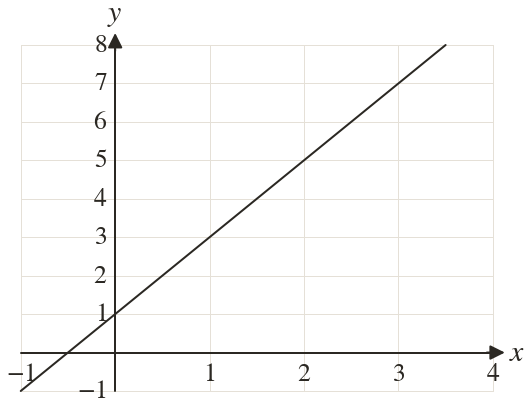
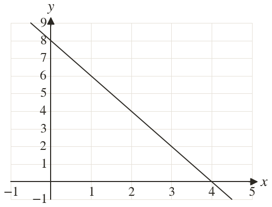
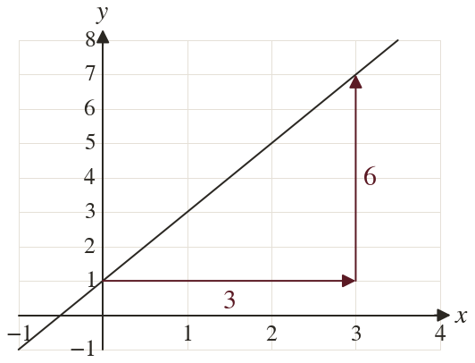
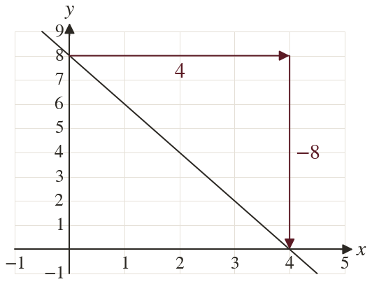

Westonbirt Maths · Linear Graphs
Gradient and y-intercept
Name: ______________________ Date: ____________
1
Find the gradient and the y-intercept of the line.
2
Find the gradient and the y-intercept of the line.
3
A line passes through and Find its gradient and y-intercept.
4
A line passes through and Find its gradient and y-intercept.
5
A line passes through and Find its gradient and y-intercept.
Ext
A line passes through and Find its gradient and y-intercept.



